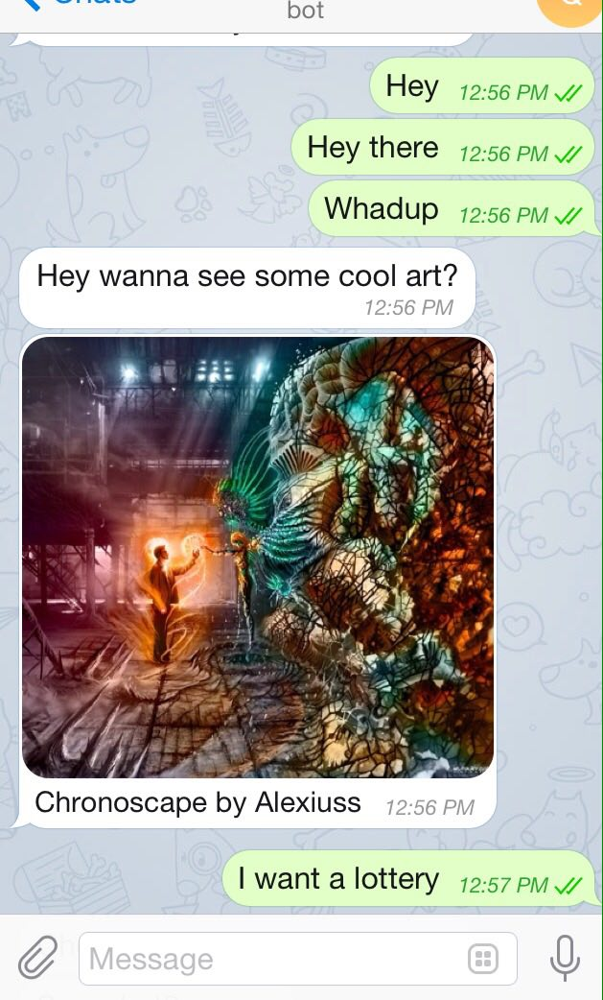
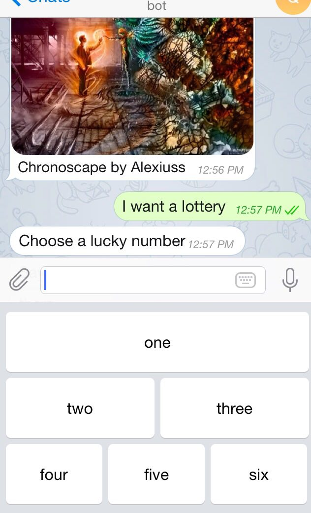

A bootstrap for Telegram bot with directly deployable sample bot and JS-wrapped API methods. You can use all methods available in the Telegram API directly, and send any supported media (we serialize the formData for you to send over HTTP).
See the full API documentation of this project.
 
Installation
Do either of
npm install telegram-bot-bootstrap
git clone https://github.com/kengz/telegram-bot-bootstrap.git
Either way you’ll get a module with the Telegram bot API wrapped in Node, and a bootstrapped, deploy-ready project.
If you haven’t already, get a bot from BotFather and remember your bot token!
Features
- Wrapped API methods take either a JSON object or multiple parameters.
- Auto serialization for HTTP formData: send photos/keyboards/media directly.
- API methods return
promises(uses q) for easy chaining and flow control. - Complete documentation and examples usages.
- Bootstrapped and directly deployable bot.
Usage: only the API
See the full API documentation of this project.
API.js contains the Telegram Bot API wrapped in Node. The methods will return a promise for easy chaining, and will take either a whole JSON, or multiple parameters for convenience. For the latter, everything will be auto-serialized for HTTP so you don’t have to deal with any of the nasty HTTP protocol stuff.
If you wish to use just the API or test the bot methods, here’s an example
Local(not deployed yet) test bot constructor
See testbot.js for functional example.
// testbot.js
var bot = require('telegram-bot-bootstrap');
var fs = require('fs');
var Alice = new bot(your-token);
Alice.getUpdates().then(console.log)
// → you'll see an update message. Look for your user_id in "message.from.id"
// Once you get your id to message yourself, you may:
Alice.sendMessage(your-id, "Hello there")
// → you'll receive a message from Alice.
.then(console.log)
// → optional, will log the successful message sent over HTTP
Sending Message, Photo and all media
Alice.sendMessage(86953862, 'Hey wanna see some cool art?');
Alice.sendPhoto(86953862, fs.createReadStream(__dirname+'/alexiuss.jpg'), 'Chronoscape by Alexiuss').then(console.log)
You’ll receive this:
Custom keyboard
var kb = {
keyboard: [
['one'],
['two', 'three'],
['four', 'five', 'six']
],
one_time_keyboard: true
};
Alice.sendMessage(86953862, "Choose a lucky number", undefined, undefined, kb)
You’ll get this:
Usage: Bootstrapped, Deployable Bot
See index.js for deployable app, and bot.js to customize bot commands.
We distinguish the bot from the API: bot.js extends API.js, and will be the deployed component.
This whole project is bootstrapped and deploy-ready: all the details of HTTP and server stuff taken care of for you. I deploy this git project onto my Heroku and voila, my bot is alive.
Setup
In addition to the token, you’ll need a webhookUrl. If you deploy your Node app to Heroku, then the webhookUrl is simply your Heroku site url. Set both of them in the .env file:
PORT=8443
TOKEN=your-Telegram-bot-token
WEBHOOK=your-webhook-url
The sample available is an echo-bot. To make your bot do interesting stuff, head over to bot.js, under the handle method, start writing your own from below the Extend from here comment.
The bot inherits all the API methods, so you can simply call them for example by this.sendMessage.
Deployment
The server is deployed in index.js, and a bot is constructed to handle all HTTP POST calls from Telegram.
I use Heroku. This shall work for any other services too. Once I’m done setting up, I do:
git push heroku master
And done. Start talking to the bot.
API documentation
“Bot” Methods
handle(req, res)
Handles a Telegram Update object sent from the server. Extend this method for your bot.
Arguments
req(Object): The incoming HTTP request.res(Object): The HTTP response in return.
Returns
(Promise): promise A promise returned from calling Telegram API method(s) for chaining.
Example
var bot1 = new bot('yourtokenhere');
...express server setup
app.route('/')
// robot API as middleware
.post(function(req, res) {
bot1.handle(req, res)
})
// Then bot will handle the incoming Update from you, routed from Telegram!
“Telegram API” Methods
API(token)
The API bot constructor.
Arguments
token(string): Your Telegram bot token.
Returns
(Bot): The bot able to call methods.
Example
var fs = require('fs');
var bot = require('telegram-bot-bootstrap');
var Alice = new bot(your_bot_token);
Alice.sendMessage(user_chat_id, 'Hey wanna see some cool art?');
Alice.sendPhoto(user_chat_id, fs.createReadStream(__dirname+'/alexiuss.jpg'), * 'Chronoscape by Alexiuss').then(console.log)
var kb = {
keyboard: [
['one'],
['two', 'three'],
['four', 'five', 'six']
],
one_time_keyboard: true
};
Alice.sendMessage(user_chat_id, "Choose a lucky number", undefined, undefined, * kb)
// → The messages and photos are sent to user.
forwardMessage(first, from_chat_id, message_id)
Use this method to forward messages of any kind.
Arguments
first(JSON|integer): Your own JSON object, or chat_id: Unique identifier for the message recipient — User or GroupChat id.from_chat_id(integer): Unique identifier for the chat where the original message was sent — User or GroupChat id.message_id(integer): Unique message identifier
Returns
(string): HTTPres On success, the sent Message is returned.
Example
Alice.forwardMessage(87654321, 12345678, 87654356)
// → Message is forwarded
getMe()
A simple method for testing your bot’s auth token. Requires no parameters.
Returns
(string): HTTPres Basic information about the bot in form of a User object.
getUpdates([first|offset], [limit], [timeout])
Use this method to receive incoming updates using long polling (wiki).
Arguments
[first|offset](JSON|integer): An optional JSON object with the parameters, or the offset integer[limit](integer):[timeout](integer):
Returns
(string): HTTPres An Array of Update objects is returned.
Example
Alice.getUpdates().then(console.log)
// → {"ok":true,"result":[{"update_id":1234567, "message":{"message_id":1,"from":{"id":87654321, ...}}]
getUserProfilePhotos(first, [offset], [limit])
Use this method to get a list of profile pictures for a user.
Arguments
first(JSON|integer): Your own JSON object, or user_id: Unique identifier of the target user.[offset](integer): Sequential number of the first photo to be returned. By default, all photos are returned.[limit](integer): Limits the number of photos to be retrieved. Values between1—100are accepted. Defaults to100.
Returns
(string): HTTPres Returns a UserProfilePhotos object.
sendAudio(first, audio, [reply_to_message_id], [reply_markup])
Use this method to send audio files, if you want Telegram clients to display the file as a playable voice message. For this to work, your audio must be in an .ogg file encoded with OPUS (other formats may be sent as Document). On success, the sent Message is returned. Bots can currently send audio files of up to 50 MB in size, this limit may be changed in the future.
Arguments
first(JSON|integer): Your own JSON object, or chat_id: Unique identifier for the message recipient — User or GroupChat id.audio(inputFile|string): Audio file to send. You can either pass a file_id as String to resend an audio that is already on the Telegram servers, or upload a new audio file using multipart/form-data.[reply_to_message_id](integer): If the message is a reply, ID of the original message.[reply_markup](KeyboardMarkup): Additional interface options. A JSON object (don’t worry about serializing; it’s handled) for a custom reply keyboard, instructions to hide keyboard or to force a reply from the user.
Returns
(string): HTTPres On success, the sent Message is returned.
sendChatAction(first, action)
Use this method when you need to tell the user that something is happening on the bot’s side. The status is set for 5 seconds or less (when a message arrives from your bot, Telegram clients clear its typing status).
Arguments
first(JSON|integer): Your own JSON object, or chat_id: Unique identifier for the message recipient — User or GroupChat id..action(string): Type of action to broadcast. Choose one, depending on what the user is about to receive: typing for text messages, upload_photo for photos, record_video or upload_video for videos, record_audio or upload_audio for audio files, upload_document for general files, find_location for location data.
Returns
(string): HTTPres On success, the sent Message is returned.
sendDocument(first, document, [reply_to_message_id], [reply_markup])
Use this method to send general files. On success, the sent Message is returned. Bots can currently send files of any type of up to 50 MB in size, this limit may be changed in the future.
Arguments
first(JSON|integer): Your own JSON object, or chat_id: Unique identifier for the message recipient — User or GroupChat id.document(inputFile|string): File to send. You can either pass a file_id as String to resend a file that is already on the Telegram servers, or upload a new file using multipart/form-data.[reply_to_message_id](integer): If the message is a reply, ID of the original message.[reply_markup](KeyboardMarkup): Additional interface options. A JSON object (don’t worry about serializing; it’s handled) for a custom reply keyboard, instructions to hide keyboard or to force a reply from the user.
Returns
(string): HTTPres On success, the sent Message is returned.
sendLocation(first, latitude, longitude, [reply_to_message_id], [reply_markup])
Use this method to send point on the map.
Arguments
first(JSON|integer): Your own JSON object, or chat_id: Unique identifier for the message recipient — User or GroupChat id.latitude(number): Latitude of locationlongitude(number): Longitude of location[reply_to_message_id](integer): If the message is a reply, ID of the original message.[reply_markup](KeyboardMarkup): Additional interface options. A JSON object (don’t worry about serializing; it’s handled) for a custom reply keyboard, instructions to hide keyboard or to force a reply from the user.
Returns
(string): HTTPres On success, the sent Message is returned.
sendMessage(first, text, [disable_web_page_preview], [reply_to_message_id], [reply_markup])
Use this method to send text messages.
Arguments
first(JSON|integer): Your own JSON object, or chat_id: Unique identifier for the message recipient — User or GroupChat id.text(string): Text of the message to be sent.[disable_web_page_preview](boolean): Disables link previews for links in this message.[reply_to_message_id](integer): If the message is a reply, ID of the original message.[reply_markup](KeyboardMarkup): Additional interface options. A JSON object (don’t worry about serializing; it’s handled) for a custom reply keyboard, instructions to hide keyboard or to force a reply from the user.
Returns
(string): HTTPres On success, the sent Message is returned.
Example
Alice.sendMessage({chat_id: 87654321, text: 'hello world'})
Alice.sendMessage(87654321, 'hello world') // equivalent, cleaner
// → 'hello world' is sent to the user with the id.
// var kb = {
// keyboard: [
// ['one'],
// ['two', 'three'],
// ['four', 'five', 'six']
// ],
// one_time_keyboard: true
// };
Alice.sendMessage(87654321, "Choose a lucky number", undefined, undefined, kb)
// → 'Choose a lucky number' is sent, with custom reply keyboard
sendPhoto(first, photo, [caption], [reply_to_message_id], [reply_markup])
Use this method to send photos.
Arguments
first(JSON|integer): Your own JSON object, or chat_id: Unique identifier for the message recipient — User or GroupChat id.photo(inputFile|string): Photo to send. You can either pass a file_id as String to resend a photo that is already on the Telegram servers, or upload a new photo using multipart/form-data.[caption](string):[reply_to_message_id](integer): If the message is a reply, ID of the original message.[reply_markup](KeyboardMarkup): Additional interface options. A JSON object (don’t worry about serializing; it’s handled) for a custom reply keyboard, instructions to hide keyboard or to force a reply from the user.
Returns
(string): HTTPres On success, the sent Message is returned.
Example
Alice.sendMessage(87654321, fs.createReadStream('localpath/to/photo.jpg'), 'cool caption')
// → The photo on local system is sent to the id.
sendSticker(first, sticker, [reply_to_message_id], [reply_markup])
Use this method to send .webp stickers.
Arguments
first(JSON|integer): Your own JSON object, or chat_id: Unique identifier for the message recipient — User or GroupChat id.sticker(inputFile|string): Sticker to send. You can either pass a file_id as String to resend a sticker that is already on the Telegram servers, or upload a new sticker using multipart/form-data.[reply_to_message_id](integer): If the message is a reply, ID of the original message.[reply_markup](KeyboardMarkup): Additional interface options. A JSON object (don’t worry about serializing; it’s handled) for a custom reply keyboard, instructions to hide keyboard or to force a reply from the user.
Returns
(string): HTTPres On success, the sent Message is returned.
sendVideo(first, video, [reply_to_message_id], [reply_markup])
Use this method to send video files, Telegram clients support mp4 videos (other formats may be sent as Document). On success, the sent Message is returned. Bots can currently send video files of up to 50 MB in size, this limit may be changed in the future.
Arguments
first(JSON|integer): Your own JSON object, or chat_id: Unique identifier for the message recipient — User or GroupChat id.video(inputFile|string): Video to send. You can either pass a file_id as String to resend a video that is already on the Telegram servers, or upload a new video file using multipart/form-data.[reply_to_message_id](integer): If the message is a reply, ID of the original message.[reply_markup](KeyboardMarkup): Additional interface options. A JSON object (don’t worry about serializing; it’s handled) for a custom reply keyboard, instructions to hide keyboard or to force a reply from the user.
Returns
(string): HTTPres On success, the sent Message is returned.
setWebhook(url)
Use this method to specify a url and receive incoming updates via an outgoing webhook. Whenever there is an update for the bot, we will send an HTTPS POST request to the specified url, containing a JSON-serialized Update. In case of an unsuccessful request, we will give up after a reasonable amount of attempts.
Arguments
url(string): A JSON object with the parameters, or the HTTPS url to send updates to. Use an empty string to remove webhook integration.
Returns
(string): HTTPres An Array of Update objects is returned.